정보처리기사 (2020-09-26 기출문제)
1과목: 소프트웨어 설계
1. XP(eXtreme Programming)의 기본원리로 볼 수 없는 것은?
- Linear Sequential Method
- Pair Programming
- Collective Ownership
- Continuous Integration
(정답률: 72%)

2. 럼바우(Rumbaugh) 객체지향 분석 기법에서 동적 모델링에 활용되는 다이어그램은?
- 객체 다이어그램(Object Diagram)
- 패키지 다이어그램(Package Diagram)
- 상태 다이어그램(State Diagram)
- 자료 흐름도(Data Flow Diagram)
(정답률: 68%)
3. CASE(Computer Aided Software Engineering)의 주요 기능으로 옳지 않은 것은?
- S/W 라이프 사이클 전 단계의 연결
- 그래픽 지원
- 다양한 소프트웨어 개발 모형 지원
- 언어 번역
(정답률: 86%)
4. 객체지향 기법의 캡슐화(Encapsulation)에 대한 설명으로 틀린 것은?
- 인터페이스가 단순화 된다.
- 소프트웨어 재사용성이 높아진다.
- 변경 발생 시 오류의 파급효과가 적다.
- 상위 클래스의 모든 속성과 연산을 하위 클래스가 물려받는 것을 의미한다.
(정답률: 90%)
5. 다음 내용이 설명하는 객체지향 설계 원칙은?
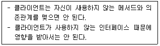
- 인터페이스 분리 원칙
- 단일 책임 원칙
- 개방 폐쇄의 원칙
- 리스코프 교체의 원칙
(정답률: 79%)
6. 파이프 필터 형태의 소프트웨어 아키텍처에 대한 설명으로 옳은 것은?
- 노드와 간선으로 구성된다.
- 서브시스템이 입력데이터를 받아 처리하고 결과를 다음 서브시스템으로 넘겨주는 과정을 반복한다.
- 계층 모델이라고도 한다.
- 3개의 서브시스템(모델, 뷰, 제어)으로 구성되어 있다.
(정답률: 78%)
7. 코드화 대상 항목의 중량, 면적, 용량 등의 물리적 수치를 이용하여 만든 코드는?
- 순차 코드
- 10진 코드
- 표의 숫자 코드
- 블록 코드
(정답률: 76%)
8. 디자인 패턴 사용의 장٠단점에 대한 설명으로 거리가 먼 것은?
- 소프트웨어 구조 파악이 용이하다.
- 객체지향 설계 및 구현의 생산성을 높이는데 적합하다.
- 재사용을 위한 개발 시간이 단축된다.
- 절차형 언어와 함께 이용될 때 효율이 극대화된다.
(정답률: 85%)
9. DFD(data flow diagram)에 대한 설명으로 틀린 것은?
- 자료 흐름 그래프 또는 버블(bubble) 차트라고도 한다.
- 구조적 분석 기법에 이용된다.
- 시간 흐름을 명확하게 표현할 수 있다.
- DFD의 요소는 화살표, 원, 사각형, 직선(단선/이중선)으로 표시한다.
(정답률: 71%)
10. 그래픽 표기법을 이용하여 소프트웨어 구성 요소를 모델링하는 럼바우 분석 기법에 포함되지 않는 것은?
- 객체 모델링
- 기능 모델링
- 동적 모델링
- 블랙박스 분석 모델링
(정답률: 94%)
11. UML의 기본 구성요소가 아닌 것은?
- Things
- Terminal
- Relationship
- Diagram
(정답률: 70%)
12. 소프트웨어의 상위설계에 속하지 않는 것은?
- 아키텍처 설계
- 모듈 설계
- 인터페이스 정의
- 사용자 인터페이스 설계
(정답률: 54%)
13. 다음 중 자료사전(Data Dictionary)에서 선택의 의미를 나타내는 것은?
- [ ]
- { }
- ＋
- ＝
(정답률: 82%)
14. 소프트웨어의 사용자 인터페이스개발시스템(User Interface Development System)이 가져야 할 기능이 아닌 것은?
- 사용자 입력의 검증
- 에러 처리와 에러 메시지 처리
- 도움과 프롬프트(prompt) 제공
- 소스 코드 분석 및 오류 복구
(정답률: 85%)
15. 요구 사항 명세기법에 대한 설명으로 틀린 것은?
- 비정형 명세기법은 사용자의 요구를 표현할 때 자연어를 기반으로 서술한다.
- 비정형 명세기법은 사용자의 요구를 표현할 때 Z 비정형 명세기법을 사용한다.
- 정형 명세기법은 사용자의 요구를 표현할 때 수학적인 원리와 표기법을 이용한다.
- 정형 명세기법은 비정형 명세기법에 비해 표현이 간결하다.
(정답률: 70%)
16. 소프트웨어 개발 단계에서 요구 분석 과정에 대한 설명으로 거리가 먼 것은?
- 분석 결과의 문서화를 통해 향후 유지보수에 유용하게 활용 할 수 있다.
- 개발 비용이 가장 많이 소요되는 단계이다.
- 자료흐름도, 자료 사전 등이 효과적으로 이용될 수 있다.
- 보다 구체적인 명세를 위해 소단위 명세서(Mini-Spec)가 활용될 수 있다.
(정답률: 90%)
17. 애자일 방법론에 해당하지 않는 것은?
- 기능중심 개발
- 스크럼
- 익스트림 프로그래밍
- 모듈중심 개발
(정답률: 68%)
18. 클라이언트와 서버 간의 통신을 담당하는 시스템 소프트웨어를 무엇이라고 하는가?
- 웨어러블
- 하이웨어
- 미들웨어
- 응용 소프트웨어
(정답률: 92%)
19. GoF(Gangs of Four) 디자인 패턴 분류에 해당하지 않는 것은?
- 생성 패턴
- 구조 패턴
- 행위 패턴
- 추상 패턴
(정답률: 83%)
20. 바람직한 소프트웨어 설계 지침이 아닌 것은?
- 적당한 모듈의 크기를 유지한다.
- 모듈 간의 접속 관계를 분석하여 복잡도와 중복을 줄인다.
- 모듈 간의 결합도는 강할수록 바람직하다.
- 모듈 간의 효과적인 제어를 위해 설계에서 계층적 자료 조직이 제시되어야 한다.
(정답률: 93%)
2과목: 소프트웨어 개발
21. 소프트웨어 패키징 도구 활용 시 고려 사항으로 틀린 것은?
- 반드시 내부 콘텐츠에 대한 암호화 및 보안을 고려한다.
- 보안을 위하여 이기종 연동을 고려하지 않아도 된다.
- 사용자 편의성을 위한 복잡성 및 비효율성 문제를 고려한다.
- 제품 소프트웨어 종류에 적합한 암호화 알고리즘을 적용한다.
(정답률: 92%)
22. EAI(Enterprise Application Integration) 구축유형 중 Hybrid에 대한 설명으로 틀린 것은?
- Hub & Spoke와 Message Bus의 혼합방식이다.
- 필요한 경우 한 가지 방식으로 EAI구현이 가능하다.
- 데이터 병목현상을 최소화할 수 있다.
- 중간에 미들웨어를 두지 않고 각 애플리케이션을 point to point로 연결한다.
(정답률: 78%)
23. 소스코드 품질분석 도구 중 정적분석 도구가 아닌 것은?
- pmd
- checkstyle
- valance
- cppcheck
(정답률: 73%)
24. 다음 Postfix 연산식에 대한 연산결과로 옳은 것은?
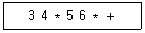
- 35
- 42
- 77
- 360
(정답률: 88%)
25. 인터페이스 보안을 위해 네트워크 영역에 적용될 수 있는 것으로 거리가 먼 것은?
- IPSec
- SSL
- SMTP
- S-HTTP
(정답률: 80%)
26. 검증(Validation) 검사 기법 중 개발자의 장소에서 사용자가 개발자 앞에서 행해지며, 오류와 사용상의 문제점을 사용자와 개발자가 함께 확인하면서 검사하는 기법은?
- 디버깅 검사
- 형상 검사
- 자료구조 검사
- 알파 검사
(정답률: 88%)
27. 다음 초기 자료에 대하여 삽입 정렬(Insertion Sort)을 이용하여 오름차순 정렬할 경우 1회전 후의 결과는?
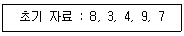
- 3, 4, 8, 7, 9
- 3, 4, 9, 7, 8
- 7, 8, 3, 4, 9
- 3, 8, 4, 9, 7
(정답률: 77%)
28. 소프트웨어 설치 매뉴얼에 대한 설명으로 틀린 것은?
- 설치과정에서 표시될 수 있는 예외상황에 관련 내용을 별도로 구분하여 설명한다.
- 설치 시작부터 완료할 때까지의 전 과정을 빠짐없이 순서대로 설명한다.
- 설치 매뉴얼은 개발자 기준으로 작성한다.
- 설치 매뉴얼에는 목차, 개요, 기본사항 등이 기본적으로 포함되어야 한다.
(정답률: 93%)
29. 인터페이스 구현 검증 도구가 아닌 것은?
- ESB
- xUnit
- STAF
- NTAF
(정답률: 65%)
30. 소프트웨어 형상 관리에서 관리 항목에 포함되지 않는 것은?
- 프로젝트 요구 분석서
- 소스 코드
- 운영 및 설치 지침서
- 프로젝트 개발 비용
(정답률: 82%)
31. 다음 설명에 해당하는 것은?
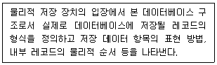
- 외부 스키마
- 내부 스키마
- 개념 스키마
- 슈퍼 스키마
(정답률: 74%)
32. 다음 트리에 대한 INORDER 운행 결과는?
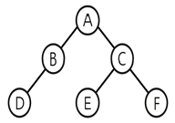
- D B A E C F
- A B D C E F
- D B E C F A
- A B C D E F
(정답률: 75%)
33. n 개의 노드로 구성된 무방향 그래프의 최대 간선수는?
- n－1
- n／2
- n(n－1)／2
- n(n＋1)
(정답률: 80%)
34. 다음이 설명하는 테스트 용어는?
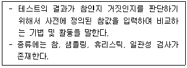
- 테스트 케이스
- 테스트 시나리오
- 테스트 오라클
- 테스트 데이터
(정답률: 63%)
35. 빌드 자동화 도구에 대한 설명으로 틀린 것은?
- Gradle은 실행할 처리 명령들을 모아 태스크로 만든 후 태스크 단위로 실행한다.
- 빌드 자동화 도구는 지속적인 통합개발환경 에 서 유용하게 활용된다.
- 빌드 자동화 도구에는 Ant, Gradle, Jenkins등이 있다.
- Jenkins는 Groovy 기반으로 한 오픈소스로 안드로이드 앱 개발 환경에서 사용된다.
(정답률: 69%)
36. 저작권 관리 구성 요소에 대한 설명이 틀린 것은?
- 콘텐츠 제공자(Contents Provider) : 콘텐츠를 제공하는 저작권자
- 콘텐츠 분배자(Contents Distributor) : 콘텐츠를 메타 데이터와 함께 배포 가능한 단위로 묶는 기능
- 클리어링 하우스(Clearing House) : 키 관리 및 라이선스 발급 관리
- DRM 컨트롤러 : 배포된 콘텐츠의 이용 권한을 통제
(정답률: 72%)
37. 블랙박스 테스트 기법으로 거리가 먼 것은?
- 기초 경로 검사
- 동치 클래스 분해
- 경계값 분석
- 원인 결과 그래프
(정답률: 72%)
38. 해싱함수 중 레코드 키를 여러 부분으로 나누고, 나눈 부분의 각 숫자를 더하거나 XOR한 값을 홈 주소로 사용하는 방식은?
- 제산법
- 폴딩법
- 기수변환법
- 숫자분석법
(정답률: 61%)
39. 다음에서 설명하는 클린 코드 작성 원칙은?
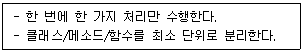
- 다형성
- 단순성
- 추상화
- 의존성
(정답률: 86%)
40. 디지털 저작권 관리(DRM) 기술과 거리가 먼 것은?
- 콘텐츠 암호화 및 키 관리
- 콘텐츠 식별체계 표현
- 콘텐츠 오류 감지 및 복구
- 라이선스 발급 및 관리
(정답률: 81%)
3과목: 데이터베이스 구축
41. 다음 설명과 관련 있는 트랜잭션의 특징은?
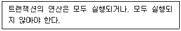
- Durability
- Isolation
- Consistency
- Atomicity
(정답률: 73%)
42. 데이터베이스에 영향을 주는 생성, 읽기, 갱신, 삭제 연산으로 프로세스와 테이블 간에 매트릭스를 만들어서 트랜잭션을 분석하는 것은?
- CASE 분석
- 일치 분석
- CRUD 분석
- 연관성 분석
(정답률: 75%)
43. 정규화된 엔티티, 속성, 관계를 시스템의 성능 향상과 개발 운영의 단순화를 위해 중복, 통합, 분리 등을 수행하는 데이터 모델링 기법은?
- 인덱스정규화
- 반정규화
- 집단화
- 머징
(정답률: 70%)
44. 학생 테이블을 생성한 후, 성별 필드가 누락되어 이를 추가하려고 한다. 이에 적합한 SQL 명령어는?
- INSERT
- ALTER
- DROP
- MODIFY
(정답률: 75%)
45. 정규화의 필요성으로 거리가 먼 것은?
- 데이터 구조의 안정성 최대화
- 중복 데이터의 활성화
- 수정, 삭제 시 이상현상의 최소화
- 테이블 불일치 위험의 최소화
(정답률: 90%)
46. 개체-관계 모델의 E-R 다이어그램에서 사용되는 기호와 그 의미의 연결이 틀린 것은?
- 사각형 - 개체 타입
- 삼각형 - 속성
- 선 - 개체타입과 속성을 연결
- 마름모 - 관계 타입
(정답률: 87%)
47. 다음 SQL문에서 빈칸에 들어갈 내용으로 옳은 것은?
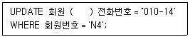
- FROM
- SET
- INTO
- TO
(정답률: 82%)
48. 릴레이션에 있는 모든 튜플에 대해 유일성은 만족시키지만 최소성은 만족시키지 못하는 키는?
- 후보키
- 기본키
- 슈퍼키
- 외래키
(정답률: 77%)
49. DBA가 사용자 PARK에게 테이블 [STUDENT]의 데이터를 갱신할 수 있는 시스템 권한을 부여하고자 하는 SQL문을 작성하고자 한다. 다음에 주어진 SQL문의 빈칸을 알맞게 채운 것은?
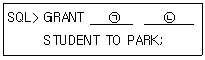
- ㉠ INSERT, ㉡ INTO
- ㉠ ALTER, ㉡ TO
- ㉠ UPDATE, ㉡ ON
- ㉠ REPLACE, ㉡ IN
(정답률: 76%)
50. 관계대수에 대한 설명으로 틀린 것은?
- 주어진 릴레이션 조작을 위한 연산의 집합이다.
- 일반 집합 연산과 순수 관계 연산으로 구분된다.
- 질의에 대한 해를 구하기 위해 수행해야 할 연산의 순서를 명시한다.
- 원하는 정보와 그 정보를 어떻게 유도하는가를 기술하는 비절차적방법이다.
(정답률: 81%)
51. 다음 SQL문의 실행 결과는?
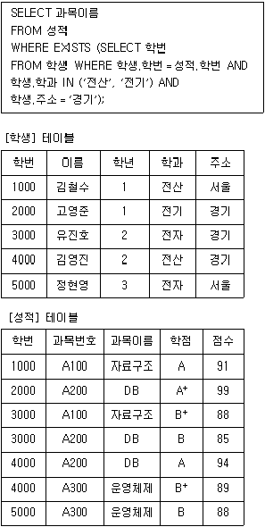
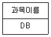
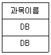
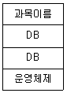
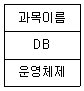
(정답률: 73%)
52. 로킹(Locking) 기법에 대한 설명으로 틀린 것은?
- 로킹의 대상이 되는 객체의 크기를 로킹 단위라고 한다.
- 로킹 단위가 작아지면 병행성 수준이 낮아진다.
- 데이터베이스도 로킹 단위가 될 수 있다.
- 로킹 단위가 커지면 로크 수가 작아 로킹 오버헤드가 감소한다.
(정답률: 79%)
53. 사용자 X1에게 department 테이블에 대한 검색 연산을 회수하는 명령은?
- delete select on department to X1;
- remove select on department from X1;
- revoke select on department from X1;
- grant select on department from X1;
(정답률: 86%)
54. 뷰(VIEW)에 대한 설명으로 틀린 것은?
- 뷰 위에 또 다른 뷰를 정의할 수 있다.
- 뷰에 대한 조작에서 삽입, 갱신, 삭제 연산은 제약이 따른다.
- 뷰의 정의는 기본 테이블과 같이 ALTER문을 이용하여 변경한다.
- 뷰가 정의된 기본 테이블이 제거되면 뷰도 자동적으로 제거된다.
(정답률: 65%)
55. 데이터 모델에 표시해야 할 요소로 거리가 먼 것은?
- 논리적 데이터 구조
- 출력 구조
- 연산
- 제약조건
(정답률: 51%)
56. 제 3정규형에서 보이스코드 정규형(BCNF)으로 정규화하기 위한 작업은?
- 원자 값이 아닌 도메인을 분해
- 부분 함수 종속 제거
- 이행 함수 종속 제거
- 결정자가 후보키가 아닌 함수 종속 제거
(정답률: 81%)
57. A1, A2, A3 3개 속성을 갖는 한 릴레이션에서 A1의 도메인은 3개 값, A2의 도메인은 2개 값, A3의 도메인은 4개 값을 갖는다. 이 릴레이션에 존재할 수 있는 가능한 튜플(Tuple)의 최대 수는?
- 24
- 12
- 8
- 9
(정답률: 79%)
58. 데이터베이스 설계 시 물리적 설계 단계에서 수행하는 사항이 아닌 것은?
- 저장 레코드 양식 설계
- 레코드 집중의 분석 및 설계
- 접근 경로 설계
- 목표 DBMS에 맞는 스키마 설계
(정답률: 71%)
59. 한 릴레이션 스키마가 4개 속성, 2개 후보키 그리고 그 스키마의 대응 릴레이션 인스턴스가 7개 튜플을 갖는다면 그 릴레이션의 차수(degree)는?
- 1
- 2
- 4
- 7
(정답률: 71%)
60. 데이터웨어하우스의 기본적인 OLAP(on-line analytical processing) 연산이 아닌 것은?
- translate
- roll-up
- dicing
- drill-down
(정답률: 59%)
4과목: 프로그래밍 언어 활용
61. UNIX SHELL 환경 변수를 출력하는 명령어가 아닌 것은?
- configenv
- printenv
- env
- setenv
(정답률: 52%)
62. Java 프로그래밍 언어의 정수 데이터 타입 중 'long'의 크기는?
- 1byte
- 2byte
- 4byte
- 8byte
(정답률: 80%)
63. Java에서 사용되는 출력 함수가 아닌 것은?
- System.out.print( )
- System.out.println( )
- System.out.printing( )
- System.out.printf( )
(정답률: 87%)
64. 운영체제에서 커널의 기능이 아닌 것은?
- 프로세스 생성, 종료
- 사용자 인터페이스
- 기억 장치 할당, 회수
- 파일 시스템 관리
(정답률: 73%)
65. OSI 7계층에서 단말기 사이에 오류 수정과 흐름제어를 수행하여 신뢰성 있고 명확한 데이터를 전달하는 계층은?
- 전송 계층
- 응용 계층
- 세션 계층
- 표현 계층
(정답률: 85%)
66. 다음 쉘 스크립트의 의미로 옳은 것은?
- wow 사용자가 로그인한 경우에만 반복문을 수행한다.
- wow 사용자가 로그인할 때까지 반복문을 수행한다.
- wow 문자열을 복사한다.
- wow 사용자에 대한 정보를 무한 반복하여 출력한다.
(정답률: 75%)
67. 다음 자바 코드를 실행한 결과는?
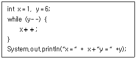
- x＝7 y＝0
- x＝6 y＝-1
- x＝7 y＝-1
- Unresolved compilation problem 오류 발생
(정답률: 69%)
68. 다음 파이썬으로 구현된 프로그램의 실행 결과로 옳은 것은?
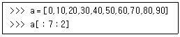
- [20, 60]
- [60, 20]
- [0, 20, 40, 60]
- [10, 30, 50, 70]
(정답률: 73%)
69. 공통모듈의 재사용 범위에 따른 분류가 아닌 것은?
- 컴포넌트 재사용
- 더미코드 재사용
- 함수와 객체 재사용
- 애플리케이션 재사용
(정답률: 74%)
70. 다음과 같은 프로세스가 차례로 큐에 도착하였을 때, SJF(Shortest Job First) 정책을 사용할 경우 가장 먼저 처리되는 작업은?
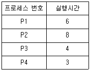
- P1
- P2
- P3
- P4
(정답률: 86%)
71. 4개의 페이지를 수용할 수 있는 주기억장치가 있으며, 초기에는 모두 비어 있다고 가정한다. 다음의 순서로 페이지 참조가 발생할 때, FIFO 페이지 교체 알고리즘을 사용할 경우 페이지 결함의 발생 횟수는?
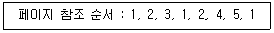
- 6회
- 7회
- 8회
- 9회
(정답률: 69%)
72. TCP 흐름제어기법 중 프레임이 손실되었을 때, 손실된 프레임 1개를 전송하고 수신자의 응답을 기다리는 방식으로 한 번에 프레임 1개만 전송할 수 있는 기법은?
- Slow Start
- Sliding Window
- Stop and Wait
- Congestion Avoidance
(정답률: 86%)
73. 결합도(Coupling)에 대한 설명으로 틀린 것은?
- 데이터 결합도(Data Coupling)는 두 모듈이 매개변수로 자료를 전달할 때, 자료구조 형태로 전달되어 이용될 때 데이터가 결합되어 있다고 한다.
- 내용 결합도(Content Coupling)는 하나의 모듈이 직접적으로 다른 모듈의 내용을 참조할 때 두 모듈은 내용적으로 결합되어 있다고 한다.
- 공통 결합도(Common Coupling)는 두 모듈이 동일한 전역 데이터를 접근한다면 공통결합 되어 있다고 한다.
- 결합도(Coupling)는 두 모듈간의 상호작용, 또는 의존도 정도를 나타내는 것이다.
(정답률: 56%)
74. 응집도의 종류 중 서로 간에 어떠한 의미 있는 연관관계도 지니지 않은 기능 요소로 구성되는 경우이며, 서로 다른 상위 모듈에 의해 호출되어 처리상의 연관성이 없는 서로 다른 기능을 수행하는 경우의 응집도는?
- Functional Cohesion
- Sequential Cohesion
- Logical Cohesion
- Coincidental Cohesion
(정답률: 64%)
75. 자바에서 사용하는 접근제어자의 종류가 아닌 것은?
- internal
- private
- default
- public
(정답률: 74%)
76. UDP 특성에 해당되는 것은?
- 데이터 전송 후, ACK를 받는다.
- 송신 중에 링크를 유지 관리하므로 신뢰성이 높다.
- 흐름제어나 순서제어가 없어 전송속도가 빠르다.
- 제어를 위한 오버헤드가 크다.
(정답률: 74%)
77. 다음과 같은 세그먼트 테이블을 가지는 시스템에서 논리 주소(2, 176)에 대한 물리 주소는?
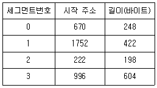
- 398
- 400
- 1928
- 1930
(정답률: 71%)
78. TCP/IP에서 사용되는 논리주소를 물리주소로 변환시켜 주는 프로토콜은?
- TCP
- ARP
- FTP
- IP
(정답률: 76%)
79. C언어에서 구조체를 사용하여 데이터를 처리할 때 사용하는 것은?
- for
- scanf
- struct
- abstract
(정답률: 83%)
80. PHP에서 사용 가능한 연산자가 아닌 것은?
- @
- #
- ＜＞
- ===
(정답률: 58%)
5과목: 정보시스템 구축관리
81. 이용자가 인터넷과 같은 공중망에 사설망을 구축하여 마치 전용망을 사용하는 효과를 가지는 보안 솔루션은?
- ZIGBEE
- KDD
- IDS
- VPN
(정답률: 84%)
82. CMM(Capability Maturity Model) 모델의 레벨로 옳지 않은 것은?
- 최적단계
- 관리단계
- 계획단계
- 정의단계
(정답률: 54%)
83. 다음 설명에 해당하는 생명주기 모형으로 가장 옳은 것은?
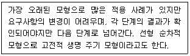
- 패키지 모형
- 코코모 모형
- 폭포수 모형
- 관계형 모델
(정답률: 90%)
84. 서비스 지향 아키텍처 기반 애플리케이션을 구성하는 층이 아닌 것은?
- 표현층
- 프로세스층
- 제어 클래스층
- 비즈니스층
(정답률: 48%)
85. 다음 내용이 설명하는 스토리지 시스템은?
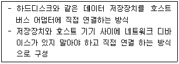
- DAS
- NAS
- N-SCREEN
- NFC
(정답률: 75%)
86. 소프트웨어 개발 프레임워크의 적용 효과로 볼 수 없는 것은?
- 공통 컴포넌트 재사용으로 중복 예산 절감
- 기술종속으로 인한 선행사업자 의존도 증대
- 표준화된 연계모듈 활용으로 상호 운용성 향상
- 개발표준에 의한 모듈화로 유지보수 용이
(정답률: 86%)
87. SoftTech사에서 개발된 것으로 구조적 요구 분석을 하기 위해 블록 다이어그램을 채택한 자동화 도구는?
- SREM
- PSL/PSA
- HIPO
- SADT
(정답률: 55%)
88. 익스트림 프로그래밍 (eXtreme Programming)의 5가지 가치에 속하지 않는 것은?
- 의사소통
- 단순성
- 피드백
- 고객 배제
(정답률: 90%)
89. 다음은 정보의 접근통제 정책에 대한 설명이다. (ㄱ)에 들어갈 내용으로 옳은 것은?
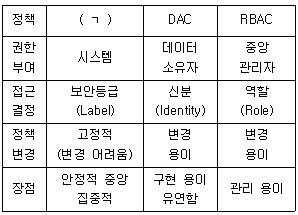
- NAC
- MAC
- SDAC
- AAC
(정답률: 69%)
90. 소프트웨어 개발 모델 중 나선형 모델의 4가지 주요 활동이 순서대로 나열된 것은?
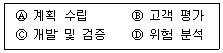
- Ⓐ-Ⓑ-Ⓓ-Ⓒ순으로 반복
- Ⓐ-Ⓓ-Ⓒ-Ⓑ순으로 반복
- Ⓐ-Ⓑ-Ⓒ-Ⓓ순으로 반복
- Ⓐ-Ⓒ-Ⓑ-Ⓓ순으로 반복
(정답률: 82%)
91. 소프트웨어 비용 추정모형(estimation models)이 아닌 것은?
- COCOMO
- Putnam
- Function-Point
- PERT
(정답률: 68%)
92. 공개키 암호화 방식에 대한 설명으로 틀린 것은?
- 공개키로 암호화된 메시지는 반드시 공개키로 복호화 해야 한다.
- 비대칭 암호기법이라고도 한다.
- 대표적인 기법은 RSA 기법이 있다.
- 키 분배가 용이하고, 관리해야 할 키 개수가 적다.
(정답률: 67%)
93. 다음이 설명하는 다중화 기술은?
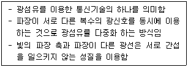
- Wavelength Division Multiplexing
- Frequency Division Multiplexing
- Code Division Multiplexing
- Time Division Multiplexing
(정답률: 82%)
94. 웹페이지에 악의적인 스크립트를 포함시켜 사용자 측에서 실행되게 유도함으로써, 정보유출 등의 공격을 유발할 수 있는 취약점은?
- Ransomware
- Pharming
- Phishing
- XSS
(정답률: 60%)
95. CBD(Component Based Development) 에 대한 설명으로 틀린 것은?
- 개발 기간 단축으로 인한 생산성 향상
- 새로운 기능 추가가 쉬운 확장성
- 소프트웨어 재사용이 가능
- 1960년대까지 가장 많이 적용되었던 소프트웨어 개발 방법
(정답률: 83%)
96. 소프트웨어 정의 데이터센터(SDDC : Software Defined Data Center)에 대한 설명으로 틀린 것은?
- 컴퓨팅, 네트워킹, 스토리지, 관리 등을 모두 소프트웨어로 정의한다.
- 인력 개입 없이 소프트웨어 조작만으로 자동 제어 관리한다.
- 데이터센터 내 모든 자원을 가상화하여 서비스한다.
- 특정 하드웨어 에 종속되어 특화된 업무를 서비스하기에 적합하다.
(정답률: 64%)
97. 컴퓨터 운영체제의 커널에 보안 기능을 추가한 것으로 운영체제의 보안상 결함으로 인하여 발생 가능한 각종 해킹으로부터 시스템을 보호하기 위하여 사용되는 것은?
- GPIB
- CentOS
- XSS
- Secure OS
(정답률: 84%)
98. NS(Nassi-Schneiderman) chart에 대한 설명으로 거리가 먼 것은?
- 논리의 기술에 중점을 둔 도형식 표현 방법이다.
- 연속, 선택 및 다중 선택, 반복 등의 제어논리 구조로 표현한다.
- 주로 화살표를 사용하여 논리적인 제어구조로 흐름을 표현한다.
- 조건이 복합되어 있는 곳의 처리를 시각적으로 명확히 식별하는데 적합하다.
(정답률: 64%)
99. 다음 내용에 적합한 용어는?
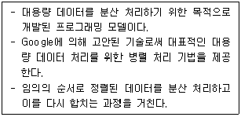
- MapReduce
- SQL
- Hijacking
- Logs
(정답률: 74%)
100. 소프트웨어 프로세스에 대한 개선 및 능력 측정 기준에 대한 국제 표준은?
- ISO 14001
- IEEE 802.5
- IEEE 488
- SPICE
(정답률: 73%)